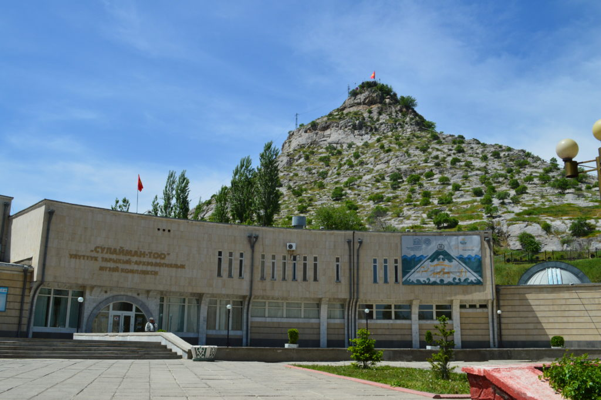

Bishkek (In Kyrgyz and Russian: Бишкек), IPA: [biʃˈkek]), formerly Pishpek and Frunze, is the capital and largest city of Kyrgyzstan. Bishkek is also the administrative centre of the Chüy Region. The region surrounds the city, although the city itself is not part of the region but rather a region-level unit of Kyrgyzstan. It is also near the Kazakhstan–Kyrgyzstan border. Its population was 1,074,075 in 2021.[4] In 1825, the Khanate of Kokand established the fortress of "Pishpek" to control local caravan routes and to collect tribute from Kyrgyz tribes. On 4 September 1860, with the approval of the Kyrgyz, Russian forces led by Colonel Apollon Zimmermann [ru] destroyed the fortress. Nowadays the fortress ruins can be found little bit north from the Jibek jolu street, nearby the new main mosque.[6] In 1868, a Russian settlement was established on the site of the fortress under its original name, "Pishpek." It lay within the General Governorship of Russian Turkestan and its Semirechye Oblast. In 1925, the Kara-Kirghiz Autonomous Oblast was established in Russian Turkestan, promoting Pishpek to its capital. In 1926, the Communist Party of the Soviet Union renamed the city "Frunze," after the Bolshevik military leader Mikhail Frunze (1885–1925), who was born there. In 1936, the city of Frunze became the capital of the Kirghiz Soviet Socialist Republic, during the final stages of national delimitation in the Soviet Union. In 1991, the Kyrgyz parliament changed the capital's name to "Bishkek." Bishkek is situated at an altitude of about 800 metres (2,600 ft), just off the northern fringe of the Kyrgyz Ala-Too Range, an extension of the Tian Shan mountain range. These mountains rise to a height of 4,895 metres (16,060 ft). North of the city, a fertile and gently undulating steppe extends far north into neighbouring Kazakhstan. The river Chüy drains most of the area. Bishkek is connected to the Turkestan–Siberia Railway by a spur line. Bishkek is a city of wide boulevards and marble-faced public buildings combined with numerous Soviet-style apartment blocks surrounding interior courtyards. There are also thousands of smaller, privately built houses, mostly outside the city centre. Streets follow a grid pattern, with most flanked on both sides by narrow irrigation channels, watering innumerable trees to provide shade in the hot summers.
Osh has an important outdoor bazaar which has been taking place on the same spot for the past 2000 years and was a major market along the Silk Road. The city's industrial base, established during the Soviet period, largely collapsed after the break-up of the Soviet Union and has recently only started to revive. The proximity of the Uzbekistan border, which cuts through historically linked territories and settlements, deprives Osh of much of its former hinterland and presents a serious obstacle to trade and economic development. Daily flights from Osh Airport link Osh—and hence the southern part of Kyrgyzstan—to Bishkek and some international destinations, mainly in Russia. Osh has two railway stations and a railway connection to Andijan in neighbouring Uzbekistan, but no passenger traffic and only sporadic freight traffic. Most transport is by road. The recent upgrading of the long and arduous road through the mountains to Bishkek has greatly improved communications. The city has several monuments, including one to the southern Kyrgyz leader (Kyrgyz: датка, romanized: datqa) Kurmanjan and one of the few remaining statues of Lenin. A Russian Orthodox church, reopened after the demise of the Soviet Union, the second-largest mosque in the country, built in 2012[4] and situated beside the bazaar, and the 16th-century Rabat Abdul Khan Mosque can be found here. The only World Heritage Site in Kyrgyzstan, the Sulayman Mountain, offers a splendid view of Osh and its environs.  This mountain is thought by some researchers and historians to be the famous landmark of antiquity known as the "Stone Tower", which Claudius Ptolemy wrote about in his famous work Geography. It marked the midpoint on the ancient Silk Road, the overland trade route taken by caravans between Europe and Asia.[6][7] The National Historical and Archaeological Museum Complex Sulayman is carved in the mountain, containing a collection of archaeological, geological, and historical finds and information about local flora and fauna. Its first Western-style supermarket, Narodnyj, opened in March 2007.[8] Osh is home to Osh State University, one of the largest universities in Kyrgyzstan. Administration Osh city (Ош шаар, "Osh shaar") covers 182.5 square kilometres (70.5 square miles)[1] and, like the capital city of Bishkek, is administered separately and not part of any region, although it is the seat of Osh Region.[9] Besides the city proper, 11 villages are administered by the city: Almalyk, Arek, Gulbaar-Tölöykön, Japalak, Kengesh, Kerme-Too, Orke, Pyatiletka, Teeke and parts of Ozgur and Tölöykön.[9] Population Osh is the second-largest city in Kyrgyzstan after the capital city of Bishkek. According to the population estimate of 2021, the city population amounted to 322,164, of which 33,315 resided in the 11 villages that the City of Osh administers.[2] At the 2009 census, 47.9% of the population were Kyrgyz, 44.2% were Uzbeks, 2.5% Russians, 2.2% Turks, 1.1% Tatars and 2.1% other nationalities.[1] The population of the built-up (or metro) area in the surrounding Kara-Suu District and in neighbouring Uzbékistan is estimated at about 400,000 inhabitants.